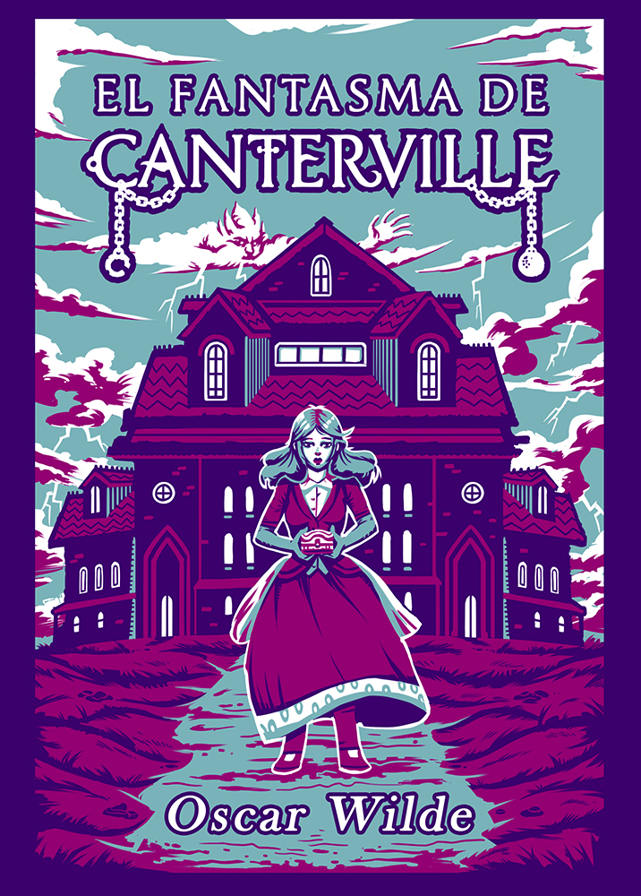
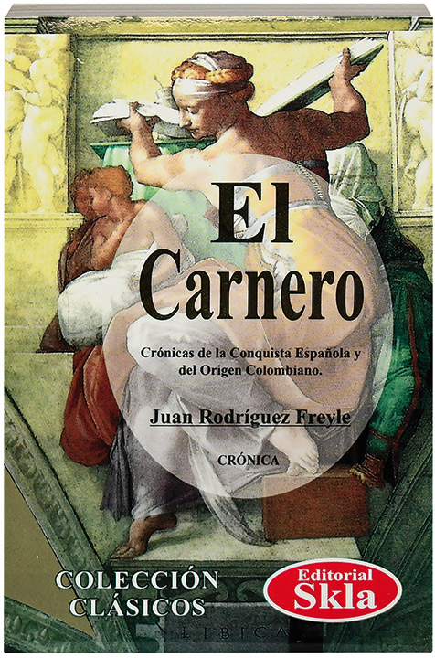

Cien Años de Soledad
Gabriel Garcia Márques publico su gran obra Cien años de soledad
(publicada en el año 1967) la narrativa hispanoamericana llego a primera
linea de la literatura mundial. Se trata de una de las tantas historias del
celebre Gabriel Garcia Márquez conocidas a nivel internacional, esperamos que
te animes a leerlo si aún no lo has hecho...
El Fantasma de Canterville
Si tuviéramos que escoger una de las obras más famosas del afamado autor Óscar Wilde,
esta sería ni más ni menos que El fantasma de Canterville .
Esta obra, publicada por primera vez en dos partes
(el 23 de febrero de 1887 y el 2 de marzo del mismo año), es una sátira humorística
ambientada en Londres la cual ha recibido una gran cantidad de adaptaciones no solo al teatro sino
también a la gran pantalla.

El Poder de Seis
El Poder de Seis es el segundo libro de la serie de ciencia ficción para adultos y jóvenes
Legados de Lorien, escrito por Pittacus Lore. Es la secuela de Soy el número cuatro, y fue
publicado el 23 de agosto del 2011 por HarperCollins Publishers.
El Carnero
Titulada originalmente como: "El Carnero. Conquista y descubrimiento del Nuevo Reino de Granada de las Indias
Occidentales del mar Océano y fundación de la ciudad de Santa Fe de Bogotá,
primera de este Reino donde se fundó la Real Audiencia y Cancillería".
Escrita por Juan Rodríguez Freyle, narra el acontecer
de la Conquista y los primeros establecimientos de la sociedad colonial.

Falsa Identidad
Esta novela de crimen y suspenso narra la historia de una joven que, con la muerte
súbita de su padre, empieza a darse cuenta de que ni él ni su madre eran quienes
ella creía. Estos dramáticos cambios la harán dudar,incluso, de su propia identidad y
darán un vuelco a su historia personal.
La búsqueda de identidad de la protagonista hace posible que los adolescentes
se enganchen con la trama que,además de ser cautivadora e inesperada, presenta herramientas
para que los lectores entiendan a su familia, al mundo que los rodea y, al final, a sí mismos.